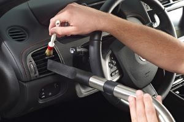

Interior
Interior Detailing is the act of cleaning, restoring, and sanitizing the inside of any given vehicle. However there are specific things that people should look for when getting an interior detail. For instance interior protectants are a great thing, however if not buffed off correctly, can leave an oily sticky residue which can even stain the leather of your vehicle.
A detailers technique is the most important thing when it comes to an interior detail. This is why detailers may often charge more for extra dirty interior jobs, however this is not the area to cheap out. A person spends nearly all of their time with their car inside of the car. So it comes to nobodys surprise when keeping the interior of a car sanitized and clean for the owner, is a detailers first and most important job when starting the detail. If you are looking for someone who will do the job cheaper, chances are they are not cleaning as throrough hence leaving a chance for dirt and bacteria being left behind.
One of the most common issues in old or unmaintained vehicles is mold. Typically mold is both surface level and imbedded into the fabric. This means that even if you clean the surface and it looks like the mold is gone, it can grow back in as little as one week. The mold that has embedded into the fabric can be removed by an All-Purpose Cleaner, a drill brush, and an extractor. This is why it is crucial to go to a detailer that you know and trust has the equiptment, the knowledge, and the experience to handle any condition of a vehicle.